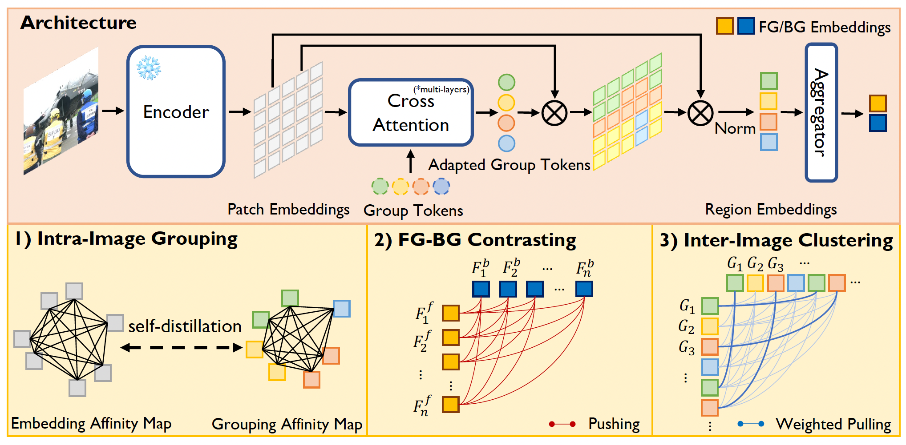

News
|
[Apr. 2025] Our paper "Mamba as a Bridge: Where Vision Foundation Models Meet Vision Language Models for Domain-Generalized Semantic Segmentation" is selected as a CVPR 2025 Highlight!
|
Publications
|
|
Mamba as a Bridge: Where Vision Foundation Models Meet Vision Language Models for Domain-Generalized Semantic Segmentation
Xin Zhang,
Robby T. Tan
The IEEE/CVF Conference on Computer Vision and Pattern Recognition (CVPR), 2025 (Highlight)
We propose MFuser, a lightweight Mamba-based framework that efficiently fuses vision foundation and vision-language models, achieving state-of-the-art performance in domain-generalized semantic segmentation with strong spatial and semantic alignment.
|
|
|
ERF: A Benchmark Dataset for Robust Semantic Segmentation Under Extreme Rainfall Conditions
Xin Yang,
Xin Zhang,
Xinchao Wang,
The Association for the Advancement of Artificial Intelligence (AAAI), 2025 (Oral)
We introduce ERF, the first benchmark for semantic segmentation under violent rain, revealing major model robustness gaps.
|
|

|
HEAP: Unsupervised Object Discovery and Localization with Contrastive Grouping
Xin Zhang,
Jinheng Xie,
Yuan Yuan,
Michael Bi Mi,
Robby T. Tan
The Association for the Advancement of Artificial Intelligence (AAAI), 2024
PDF
We propose a hierarchical contrastive grouping framework, HEAP, for unsupervised object discovery and localization.
|
|
|
Adaptive Domain Generalization via Online Disagreement Minimization
Xin Zhang,
Ying-Cong Chen
IEEE Transactions on Image Processing (TIP), 2023
PDF
This work introduces AdaODM, which adapts models at test time by reducing classifier disagreement, boosting generalization to unseen domains.
|
Academic Services
|
Serve as a reviewer for CVPR, ICCV, ECCV, NeurIPS, ICML, ICLR, AAAI, MICCAI, TPAMI, TMLR.
|
Awards
|
[2020] Outstanding Graduate with a Master's Degree of Beijing
[2019] National Scholarship
[2017] Outstanding Graduate with a Bachelor's Degree of Beihang University
|
The template of this page is from Jon Barron.
|
|
{kind=link}